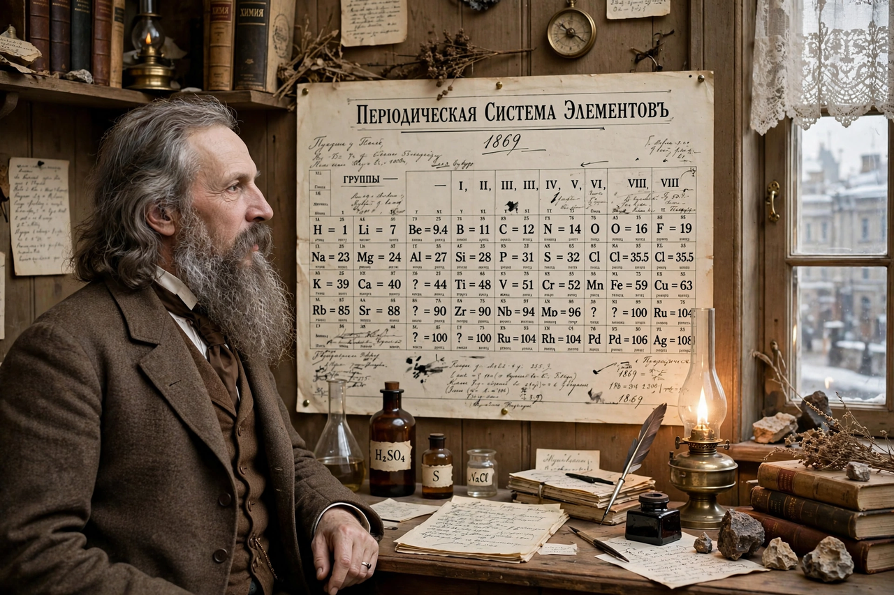

| Dmitri Mendeleev | |
|---|---|
 Mendeleev in 1897 | |
| Born | Dmitri Ivanovich Mendeleev, 8 February 1834, Verkhnie Aremzyani, Siberia, Russian Empire |
| Died | 2 February 1907 (aged 72), Saint Petersburg, Russian Empire |
| Known for | Formulating the periodic table of elements; predicting properties of undiscovered elements |
| Fields | Chemistry |
| Institutions | Saint Petersburg Imperial University |
Dmitri Ivanovich Mendeleev (8 February 1834 – 2 February 1907) was a Russian chemist best known for formulating the periodic law and creating a widely recognised version of the periodic table of elements. Using the table, he corrected the properties of some already-discovered elements and predicted the properties of eight then-unknown elements — predictions vindicated by later discoveries, which turned a classification scheme into one of the great predictive triumphs of science.
Mendeleev was born in a village near Tobolsk in Siberia, the youngest of a large family (tradition says fourteen children; the exact number is uncertain). His father, a schoolteacher, went blind and lost his post; his mother restarted a local glass factory to support the family and later walked much of the way — and ultimately travelled by cart and on foot across Russia — to get her youngest son an education. After her death he studied at the Main Pedagogical Institute in Saint Petersburg, graduating in 1855. He worked in Heidelberg with Robert Bunsen and Gustav Kirchhoff and attended the landmark Karlsruhe Congress of 1860, where Stanislao Cannizzaro's ideas on atomic weights clarified his thinking.
While writing his textbook Principles of Chemistry (1868–1870), Mendeleev sought a logical order for the 63 elements then known. Arranging them by atomic weight and chemical similarity — famously, legend says, after laying them out like a game of patience — he found that properties recur periodically. His table, published in 1869, left gaps for elements yet to be discovered and gave quantitative predictions for them: "eka-aluminium", "eka-boron" and "eka-silicon" were found as gallium (1875), scandium (1879) and germanium (1886), with properties strikingly close to his forecasts.
Mendeleev's table appeared in the same year as the independent system of Lothar Meyer, who had published a partial table in 1864; priority was long disputed, and the two shared the Royal Society's Davy Medal in 1882. Where Mendeleev triumphed was in his willingness to trust the pattern over the data — reversing pairs such as tellurium and iodine when their properties demanded it, an ordering explained only decades later by atomic number rather than atomic weight.
Beyond the table, Mendeleev researched solutions and the thermal expansion of liquids, helped found the Russian Chemical Society, promoted the Russian oil industry and protectionist tariffs, worked on smokeless powder, and served from 1893 as director of the Bureau of Weights and Measures. He was dismissed from his university chair in 1890 after supporting student protests. Despite his fame he never received the Nobel Prize, reportedly losing the 1906 chemistry vote by a narrow margin.
Element 101, mendelevium, synthesised in 1955, is named in his honour, as are a lunar crater and a ridge in the Arctic Ocean.